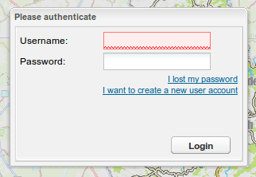
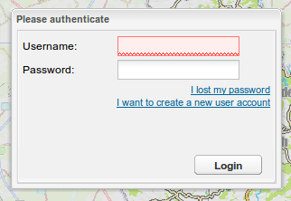

Mobile Development With
OpenLayers
Sencha Touch
& Cordova (PhoneGap)


FOSS4G 2013 - Presentation by Pierre GIRAUD

github.com/pgiraud / @pgira
Context
Need for a mobile application
With offline support
Desktop application already existing
With offline support
Desktop application already existing
Desktop app overview

Desktop app overview
Many layers in a catalog
Desktop app overview
Authentication

to allow users create their own maps.

to allow users create their own maps.
Desktop app overview
... and many other features
Mobile app required features
- Navigable and queriable map
- Base layers
- Overlay layers (a lot)
- Location search
- Offline support
- I18n (languages)
- Android and iOS
- Web + Native
- (Access to camera)
Mockups

Mockups

Offline support
Local storage
Usually limited to 5MB.
~400 tiles
-> Doesn't suit the needs.
Cordova (PhoneGap)
to the rescue
Unlimited (1) write to file system support.
(1) limited to device memory storage
Database or File?
Benchmarks
@pgiraud/OfflineTilesDifficult to have good benchmarks.
- Many inputs to check:
- Size of image
- Device (simulator or real device, OS, ...)
- Service response latency
Benchmarks
Result: File > Database
(Note: not valid anymore, to be reconsidered)
Database or File?
window.requestFileSystem(LocalFileSystem.PERSISTENT, 0,
function(fs) {
fs.root.getDirectory(
"newDir",
{create: true, exclusive: false},
function(dirEntry) {
// do something with dirEntry.fullPath
},
onDirError
},
onFsError
);var fileTransfer = new FileTransfer();
fileTransfer.download(
url,
path + '/' + fileName,
function(file) {
// file successfully downloaded
// update percent done counter
},
onError
);What do filenames look like?
$uuid_$z_$x_$y.pngPerformance considerations
Layers are merged on-the-fly using MapProxyto lower the network load as much as possible.
| + | + |

|
= |
Loading bar
Integration with
OpenLayers
var SavedMapLayer = OpenLayers.Class(OpenLayers.Layer.XYZ, {
async: true, // because Cordova File API is asynchronous
fs: null, // the FileSystem
uuid: null, // id of the layer to build filenames
...
getURLasync: function(bounds, callback, scope) {
...
this.fs.root.getFile(
path + '/' + fileName,
null,
function(fileEntry) {
callback.call(scope, fileEntry.toURL());
},
onError
);
}
});window.requestFileSystem(LocalFileSystem.PERSISTENT, 0,
var layer = new SavedMapLayer(
'savedmap',
{
isBaseLayer: true,
fs: fs,
uuid: uuid,
[...]
}
);Conclusion
Developing w/ OpenLayers, SenchaTouch, PhoneGap
Pros
- ST: Nice looking app (buttons, views, theme)
- ST: UI dev can be fast
- OL: powerful and extensible
Developing w/ OpenLayers, SenchaTouch, PhoneGap
Cons
- ST: intrusive event management,
- ST: transition performance issues,
- ST: limited browsers support,
- PG: Building apps for multiple targets not straight forward.
- Debugging is painful
General considerations
- Multiple plateforms and devices (OS, version, size) -> testing time increased
- Android simulator is slow
- iOS dev requires a mac and apple user account